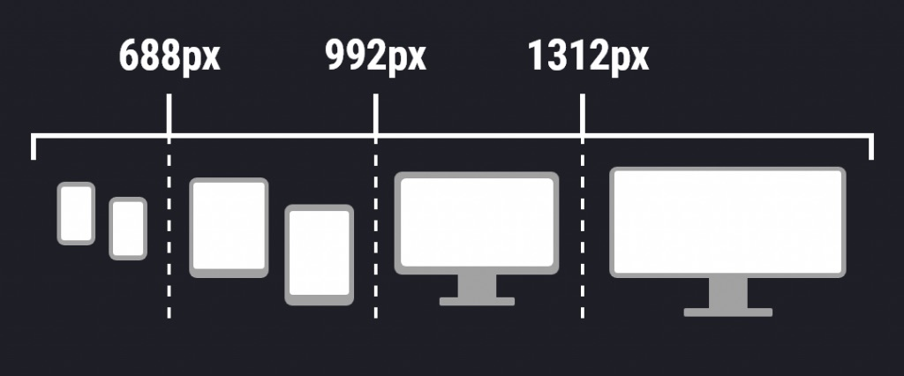

Aquí va tu contenido
Información del proyecto
¿Qué son los breakpoints?
Los breakpoints (puntos de quiebre) son tamaños de pantalla en los que el diseño de una
página web cambia para adaptarse correctamente a diferentes dispositivos.
Su objetivo es lograr un diseño responsive, es decir, que la página se vea bien en
celulares, tablets y computadoras.

Información sobre los componentes adaptativos
Información sobre imágenes y multimedia responsivos